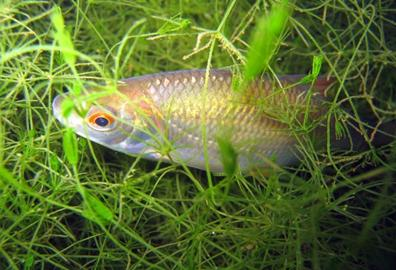

Otto ja Silvia on klassikaaslased ning innukad kalastajad, kellele meeldib käia korra-paar nädalas oma kodukoha lähedal asuvas järvekeses kala püüdmas. See järv on elukohaks paljudele kalaliikidele. Mõned neist on röövkalad (nt haugid) ja teised lepiskalad (nt särjed). Silvia avastas, et eelmisel kuul oli nende püütud kalade hulgas rohkem särgi kui hauge, aga sel kuul oli asi vastupidine – kätte saadi rohkem hauge kui särgi. Otto arvates oli see väga kummaline. Koolis bioloogiatundides oli neile selgitatud, et ökosüsteemi troofilised tasemed võivad olla esitatud ökoloogilise arvukuse püramiidina, biomassi püramiidina või energiapüramiidina. Nendele teadmistele tuginedes eeldasid Otto ja Silvia, et röövkalade hulka kuuluvaid hauge peaks olema vähem kui särgi, lepiskalu. Seetõttu oli viimaste kuude kalasaak Otto ja Silvia jaoks arusaamatu. Noored eeldasid, et nende poolt püütud kalade arv peegeldab järves elavate haugide ja särgede populatsioonisuurusi, ent liikide esindatus oli sel kuul vastupidine – hauge olid nad püüdnud rohkem kui särgi. Kas kalapopulatsioonide suuruse erinevusi võiks selgitada muutustega kohalike kalameeste kalapüügis? Või üritavad kalamehed ise järve kaladega rikastada, et seal ka tulevikus kalapüügiga tegeleda? Otto ja Silvia arutasid oma tähelepanekuid kohalike kalameestega, kes kinnitasid, et laste poolt täheldatud muutused populatsioonide arvukuses on üsna tavalised. Samuti olid kalamehed päris kindlad, et järves toimib haugide ja särgede arvukuse iseregulatsioon ning neil pole vaja kohalikku magevee ökosüsteemi sekkuda. Ent kuidas saaksid Otto ja Silvia seda nähtust selgitada?
Harilik särg (Rutilus rutilus) source: http://en.wikipedia.org/wiki/File:Blausteinsee_Tierwelt_03.jpg

Haug (Esox lucius) source: http://en.wikipedia.org/wiki/File:Hecht.jpg